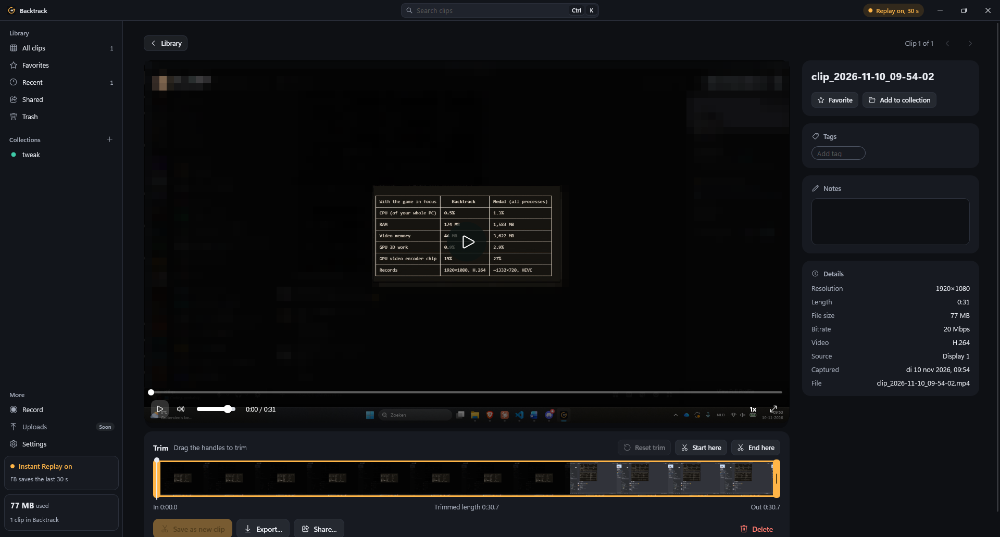
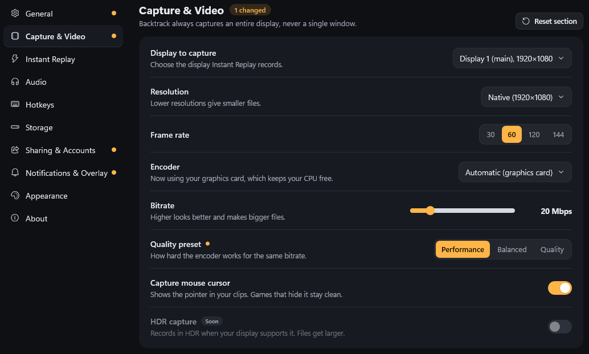
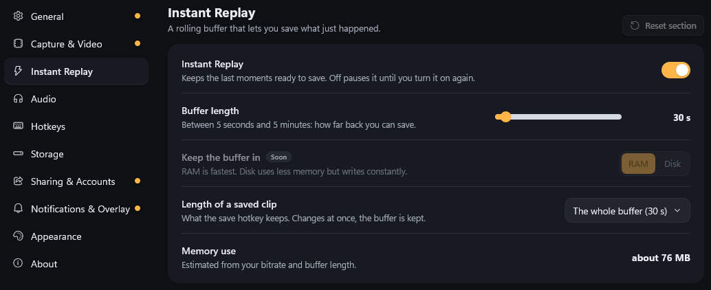
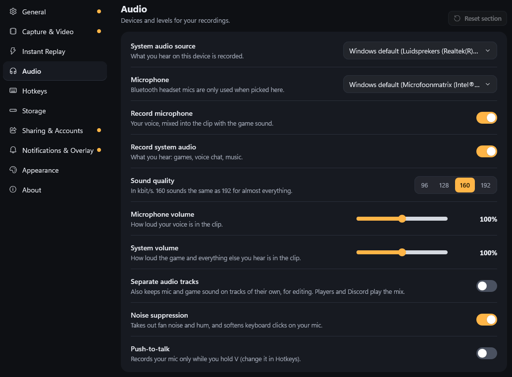
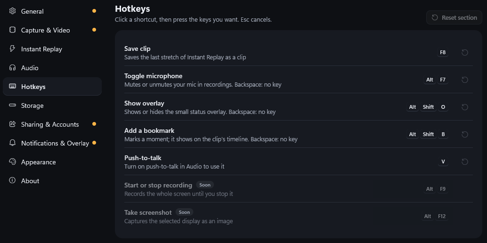

project
Backtrack is an instant replay clipper for Windows. It keeps the last 30 seconds of your screen, game sound and mic in memory, and when something cool happens you press F8 and it's saved as a clip.
I made Backtrack because i wanted something like Medal that doesn't use a ton of my PC while i'm gaming. It runs in the background and always holds the last few seconds of your screen. Press F8 and those seconds get saved as an mp4, with your game sound and your mic mixed in. Nothing gets written to your disk until you press it.
Your clips end up in a library where you can trim them, give them tags and notes, favorite them or put them in collections. You can also share a clip and get a link that plays right inside Discord. It can even repair Medal clips so your mic is actually heard.
I made this with a lot of help from AI. I came up with the idea and what it should do, and kept testing and tweaking it until it worked how i wanted.
It's written in C++ and only uses what Windows already ships with. No FFmpeg, no OBS and nothing extra to install.
This was my first real C++ project and i learned how screen recording actually works under the hood, from grabbing the screen to encoding video and keeping sound and picture in sync.
screenshots




